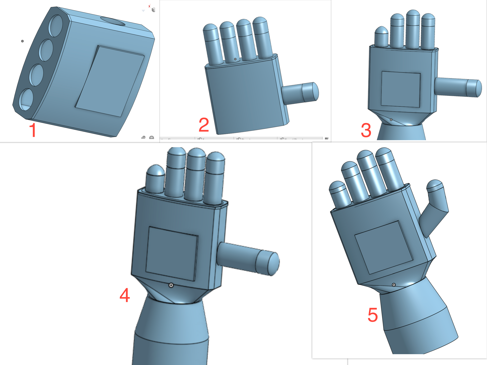

Design Process
Discover the iterative design journey behind our gauntlet prototype.
Discover the iterative design journey behind our gauntlet prototype.
Our team followed an iterative design process to create the optimal gauntlet prototype for rescue missions. We aimed to enhance the gauntlet's ergonomics, durability, and overall aesthetics throughout the development stages.
Throughout the design process, we collaborated closely with the hardware and software team members to ensure seamless integration of sensors and components.
For a detailed view of our design process, check out our Design Process Document.
.